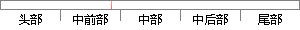

相关的设置可根据芯片手册来设置相应的寄存器。
片段位置图

相似结果
相似片段：进一步将5V电源转换为-5V输出,采用 TPS6735芯片实现...只要设置与BANK6相关的几个寄存器即可,这些设置需在...其他型号的SDRAM,可根据相应的数据手册来决定SCAN的...
| 标题 | 《基于ARM的血氧饱和度测量仪研制》 |
| 对比库 | 中国学位论文全文数据库 |
| 作者 | 张晓军 |
| 机构 | 厦门大学 |
| 分类 | 电路与系统 |
| 年份 | 2007 |
| 相似率 | 100% （严重抄袭） |
※ 片段修改建议 ※
近似词参考：- 相关：相干
- 相应：响应
系统自动生成语句：相干的设置可根据芯片手册来设置响应的寄存器。
注：本片段修改建议为系统自动生成，仅供参考。